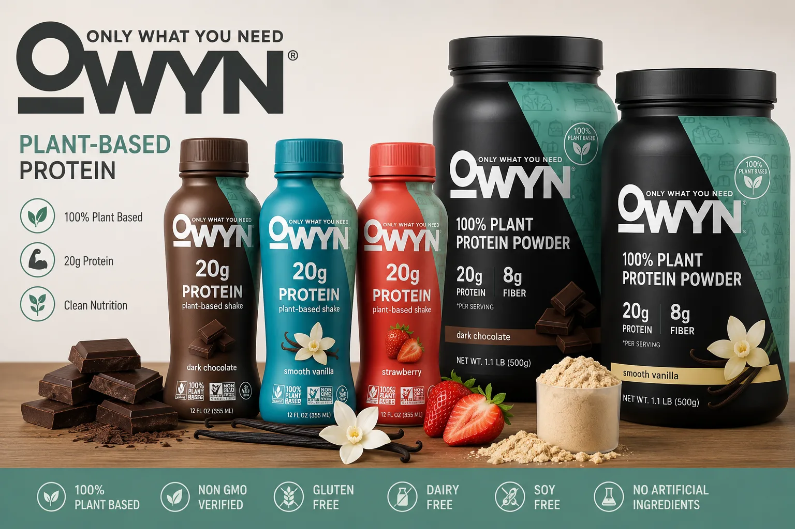
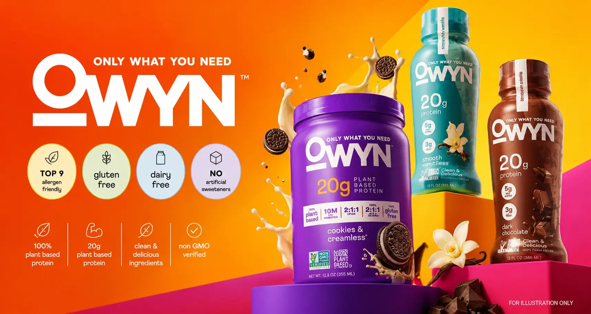

Plant-Based Blend
A multi-source plant protein formula instead of whey or casein.

Only What You Need
Looking for the best vegan protein shake or an OWYN non dairy protein shake? Explore plant based protein drinks, vegan protein drinks, and ready-to-drink options made with only what you need.
Introduction
The demand for clean, convenient plant based protein shake and plant protein shakes has increased as more people look for healthier alternatives to traditional dairy-based protein drinks. This product has become a popular choice for anyone who wants a vegan protein shake, protein shakes dairy free, or a simple shake protein option that fits an active lifestyle.
OWYN, which stands for Only What You Need, is also searched as liveowyn online. The brand focuses on Only What You Need protein drink and Only What You Need protein shakes made with plant-based ingredients and essential nutrients — without relying on animal-based protein.
An OWYN vegan protein shake, vegan protein drink, or one protein shake from the line can work as a post-workout drink, breakfast option, convenient snack, or everyday plant protein drink.
Searching for “onyx protein shake”? That is a common misspelling of OWYN — you are in the right place for OWYN plant based protein shake information.

The Brand
OWYN is a plant-based nutrition company that focuses on creating protein shakes and nutritional drinks designed for modern lifestyles. The brand emphasizes convenient nutrition while avoiding common ingredients that many consumers prefer to limit, such as dairy and artificial additives.
The goal behind Only What You Need protein drink products is to provide accessible nutrition for people following vegan, vegetarian, dairy-free, or allergen-conscious diets — including anyone who wants protein shakes vegetarian or vegan protein shakes ready to drink.
Why OWYN
Unlike many traditional protein shakes that use whey protein from milk, OWYN uses plant-based protein sources — a suitable option for people who want protein without dairy.
A multi-source plant protein formula instead of whey or casein.
Made for vegan and vegetarian lifestyles without animal ingredients.
No milk-based protein — ideal for lactose-sensitive consumers.
Grab-and-go convenience for workouts, travel, and busy days.
Formulated for protein support plus everyday wellness nutrients.
Ingredients & Nutrition
A major reason consumers choose an OWYN vegan protein shake is its plant-based protein formula. Instead of using whey or casein protein, OWYN uses a combination of plant sources to deliver protein nutrition in each plant protein shake.
Using multiple plant protein sources helps create a balanced amino acid profile while keeping the product suitable for vegan diets and protein shakes dairy free routines.
Want full label details? See our dedicated guide to protein shake ingredients, nutrition facts, and calories.
Benefits
Protein plays an important role in maintaining muscle mass, supporting recovery, and helping the body perform essential functions. An OWYN plant based protein shake provides a convenient way to add protein to your daily routine without preparing a full meal.
Traditional protein drinks often contain whey protein, which may not be suitable for individuals with lactose intolerance or vegan dietary preferences. OWYN offers an alternative for vegans, vegetarians, dairy-free consumers, and anyone looking for plant-based nutrition.
Modern schedules often make it difficult to prepare balanced meals. A ready-to-drink OWYN protein drink provides a simple solution for people who need quick nutrition.
Comparison
The main difference between OWYN and traditional protein shakes is the source of protein.
| Feature | OWYN Shake | Whey Protein Shake |
|---|---|---|
| Protein Source | Plant-based | Dairy-based |
| Vegan Friendly | Yes | Usually No |
| Dairy-Free | Yes | Usually No |
| Suitable for Plant-Based Diets | Yes | No |
| Ready-to-Drink Options | Available | Available |
For consumers who prioritize plant-based ingredients, OWYN provides an alternative to conventional dairy protein products.
Shop Our Line-up
Designed for people who need additional protein support, including athletes and individuals with higher protein requirements. Use after exercise or as a convenient protein source throughout the day.
Explore Pro Elite & moreFocuses on balanced nutrition along with protein. Ideal for individuals looking for a convenient meal supplement or everyday nutrition option.
Explore nutrition shakesSimple, plant-based nutrition that fits into busy routines. Different varieties let you choose products based on your health and lifestyle goals.
Browse shake flavorsExplore More
Dive deeper into ingredients, reviews, flavors, product types, powders, and buying options.
Ingredients lists, nutrition facts, calories, and powder label details.
Shake reviews, healthy-or-not questions, side effects, and safety topics.
Chocolate, dark chocolate, vanilla, cookies and cream, and more.
Pro Elite, 32g shakes, nutrition shakes, coffee shakes, and bars.
Plant protein powder, sugar-free options, and all-in-one formulas.
Online shopping tips and OWYN protein shakes Costco availability.
Pricing
The price of OWYN protein shakes can vary depending on package size, retailer pricing, subscription options, discounts and promotions, and product type.
Plant-based protein products may sometimes cost more than traditional protein drinks because of ingredient sourcing and specialized formulations.
For many buyers, the value comes from choosing a product that matches their dietary preferences and nutrition goals.
Availability
Shop the official liveowyn store, compare retailers, or check warehouse clubs. For full details, visit our where to buy protein shakes guide, including Costco tips.
Who It’s For
People who exercise regularly may use OWYN protein drinks to support recovery and increase protein intake.
Especially appealing to individuals who want protein without animal-based ingredients.
A ready-to-drink OWYN protein shake helps maintain nutrition when meal prep time is limited.
FAQ
Yes, they are made with plant-based ingredients and are designed for people following vegan lifestyles.
OWYN uses plant-based protein sources, including pea protein and pumpkin seed protein, to provide vegan protein nutrition.
They can support a balanced diet because they provide protein and convenient nutrition. However, weight management depends on overall calorie intake, physical activity, and lifestyle habits.
You can purchase OWYN products through the official OWYN website, online retailers, and selected stores. Availability may vary by location.
They may be available at Costco depending on store location and inventory. Customers should check Costco’s website or local warehouse availability.
Some OWYN nutritional shakes may be used as meal supplements depending on individual nutrition requirements and daily calorie needs.
Final Verdict
It is a convenient option for people looking for plant-based, dairy-free protein nutrition. With vegan ingredients, a focus on simple nutrition, and ready-to-drink convenience, OWYN fits well into many modern lifestyles.
Whether you choose an OWYN vegan protein shake, OWYN protein drink, or OWYN plant based protein shake, the best option depends on your personal health goals and dietary preferences. For consumers who value clean ingredients and easy protein intake, OWYN can be a practical addition to a balanced nutrition routine.
Visit Official StoreCustomer Reviews
Real feedback from people who switched to plant-based OWYN protein drinks.
“This product replaced my rushed breakfast. It tastes clean, keeps me full, and I love that it is dairy-free.”
“I wanted a vegan protein shake that did not feel chalky. OWYN is smooth, convenient, and easy to grab after training.”
“Best everyday plant based protein shake I have tried. Simple ingredients and no dairy - exactly what I needed.”